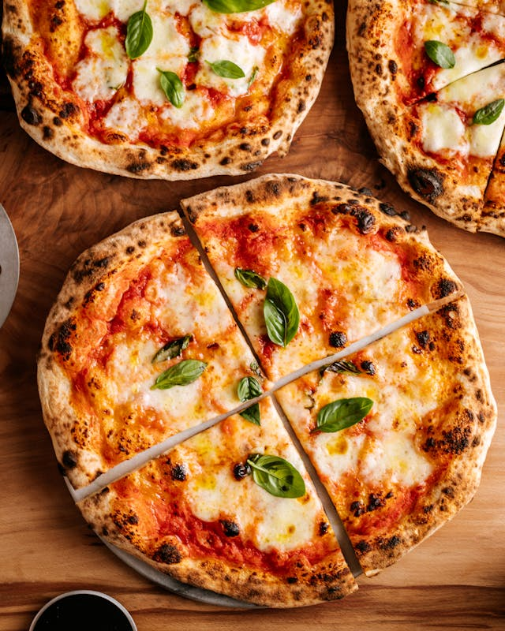

Pizza margherita

Description
This classic pizza margherita starts with a chewy crust, tangy tomato sauce, and melted fresh mozzarella cheese. Topped with a sprinkle of fresh basil leaves, this pizza is a classic for a reason.
Ingredients
Dough
-
1 ¼ cups water(300 mL), warm
-
¼ oz active dry yeast(10 g), 1 packet
-
1 ½ teaspoons sugar
-
3 ½ cups all-purpose flour(435 g)
-
2 tablespoons salt
-
¼ cup extra virgin olive oil(60 mL)
Topping
-
2 cups tomato(400 g), strained
-
fresh basil
-
8 oz fresh mozzarella cheese(225 g)
-
olive oil
-
salt
Steps
Here's a very brief overview of what you can expect when you make pizza margherita:
-
In a small mixing bowl, whisk the warm water, yeast, and sugar together. Place in a warm place for 10 minutes, or until yeast is foamy.
-
In a large mixing bowl, whisk together the flour and salt.
-
Make a well in the center of the dry ingredients and add the yeast mixture and olive oil. Stir the wet ingredients into the dry ingredients until the dough comes together and becomes difficult to stir.
-
Turn the dough out onto a lightly floured surface and knead until the dough is smooth, about 5 minutes. Add small amounts of flour as necessary to prevent sticking.
-
Transfer the dough to a large bowl coated with olive oil. Cover with a towel and let rise in a warm place for 1-2 hours, until the dough has doubled in size.
-
Once the dough has doubled in size, remove the towel and punch the dough down. Turn out onto a lightly floured surface and divide the dough into 6-8 pieces, and shape each into a small ball.
-
Place the formed balls onto a baking sheet and rest, covered, for 15 minutes.
-
To shape the individual pizzas, press out the dough balls onto a lightly floured surface. Create a slightly thicker rim around the outside of the dough and continue to stretch into a 9- to 10-inch (23-25 cm) round.
-
Heat a large cast-iron pan over medium heat, until the pan just begins to smoke, about 5 minutes.
-
Carefully transfer a stretched pizza round onto the hot pan. Leave to cook for 2-3 minutes (the dough should begin bubbling up) until lightly tanned with a few dark spots. Flip and continue to cook on the other side for 1-2 minutes longer, until the crust is completely dry.
-
Remove the dough to rest on a wire rack and repeat with remaining dough.
-
To finish the pizzas, top each crust with tomato sauce and fresh mozzarella.
-
Transfer to the oven and broil for 7 or 8 minutes, until the cheese has melted and the crust has developed a nice char in spots. Watch closely and move to a lower rack if necessary.
-
Finish each pizza with fresh basil, a drizzle of olive oil, and a sprinkle of salt.
-
Enjoy!
Return home